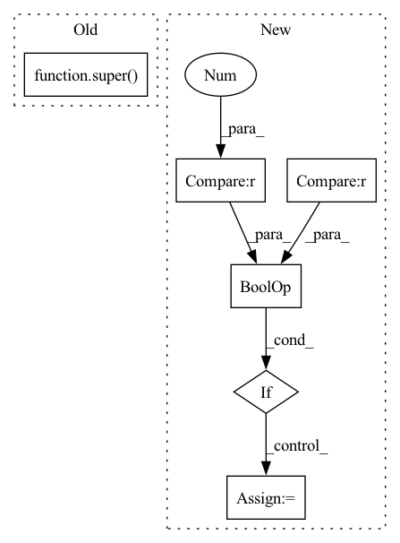

Pattern ID :24364
Before Change
expansion = 1
def __init__(self, in_planes, planes, stride=1):
super( BasicBlock, self) .__init__()
self.conv1 = nn.Conv2d(in_planes, planes, kernel_size=3, stride=stride, padding=1, bias=False)
self.bn1 = nn.BatchNorm2d(planes)
self.conv2 = nn.Conv2d(planes, planes, kernel_size=3, stride=1, padding=1, bias=False)After Change
super().__init__()
if norm_layer is None:
norm_layer = nn.BatchNorm2d
if groups != 1 or base_width != 64 :
raise ValueError("BasicBlock only supports groups=1 and base_width=64")
if dilation > 1:
raise NotImplementedError("Dilation > 1 not supported in BasicBlock")
// Both self.conv1 and self.downsample layers downsample the input when stride != 1
self.conv1 = conv3x3(inplanes, planes, stride)
self.bn1 = norm_layer(planes)
self.relu = nn.ReLU(inplace=True)
self.conv2 = conv3x3(planes, planes)
self.bn2 = norm_layer(planes)
self.downsample = downsampleIn pattern: SUPERPATTERN
Frequency: 3
Non-data size: 6
Instances Fragment ID: 75698609
Project Name: decile-team/cords
Commit Name: 931f2dbbb853ea9beb25e72b69e473c0365e60ca
Time: 2023-02-04
Author: 61333497+krishnatejakk@users.noreply.github.com
File Name: cords/utils/models/resnet.py
M Class Name: BasicBlock
N Class Name: BasicBlock
M Method Name: __init__(9)
N Method Name: __init__(4)
M Parent Class: nn.Module
N Parent Class: nn.Module
M File Name: cords/utils/models/resnet.py
N File Name: cords/utils/models/resnet.py
M Start Line: 17
M End Line: 31
N Start Line: 66
N End Line: 90
Before Change
return x
def reorder_incremental_state(self, incremental_state, new_order):
super() .reorder_incremental_state(incremental_state, new_order)
cached_state = utils.get_incremental_state(self, incremental_state, "cached_state")
if cached_state is None:
returnAfter Change
return [state_i.index_select(0, new_order) for state_i in state]
def reorder_incremental_state(self, incremental_state: Optional[Dict[str, Dict[str, Optional[Tensor]]]], new_order):
if incremental_state is None or len(incremental_state) == 0 :
return
prev_hiddens, prev_cells, input_feed = self.get_cached_state(incremental_state)
cached_state = (prev_hiddens, prev_cells, [input_feed])
new_state = [self.reorder_state(state, new_order) for state in cached_state]
prev_hiddens_tensor = torch.stack(new_state[0])
prev_cells_tensor = torch.stack(new_state[1])
cached_state_new = torch.jit.annotate(
Dict[str, Optional[Tensor]],
{"prev_hiddens": prev_hiddens_tensor, "prev_cells": prev_cells_tensor, "input_feed": new_state[2][0]}) Fragment ID: 75698599
Project Name: kssteven418/i-bert
Commit Name: 57526c63433c0b1c997fc91c0881867532567266
Time: 2020-04-16
Author: xfrui@fb.com
File Name: fairseq/models/lstm.py
M Class Name: LSTMDecoder
N Class Name: LSTMDecoder
M Method Name: reorder_incremental_state(3)
N Method Name: reorder_incremental_state(3)
M Parent Class: FairseqIncrementalDecoder
N Parent Class: FairseqIncrementalDecoder
M File Name: fairseq/models/lstm.py
N File Name: fairseq/models/lstm.py
M Start Line: 498
M End Line: 513
N Start Line: 538
N End Line: 550
Before Change
def __init__(self, *, epsilon, delta, sensitivity):
super() .__init__(epsilon=epsilon, delta=delta)
self.sensitivity = self._check_sensitivity(sensitivity)
self._scale = np.sqrt(2 * np.log(1.25 / self.delta)) * self.sensitivity / self.epsilon
After Change
self.delta = float(delta)
self.sensitivity = float(sensitivity)
// special requirements for epsilon and delta in Gaussian
if epsilon == 0 or delta == 0 :
raise ValueError("Neither Epsilon nor Delta can be zero")
self.special_check_for_params()
self._scale = (
np.sqrt(2 * np.log(1.25 / self.delta)) * self.sensitivity / self.epsilon
)
self._rng = secrets.SystemRandom()
def special_check_for_params(self):
if self.epsilon > 1.0: Fragment ID: 75698603
Project Name: fedml-ai/fedml
Commit Name: b2371aa28ab7bfeffdb0f94705dbb444378faf7e
Time: 2022-07-24
Author: sshan0731@hotmail.com
File Name: python/fedml/core/differential_privacy/mechanisms/gaussian.py
M Class Name: Gaussian
N Class Name: Gaussian
M Method Name: __init__(1)
N Method Name: __init__(1)
M Parent Class:
N Parent Class: DPMechanism
M File Name: python/fedml/core/differential_privacy/mechanisms/gaussian.py
N File Name: python/fedml/core/differential_privacy/mechanisms/gaussian.py
M Start Line: 61
M End Line: 62
N Start Line: 36
N End Line: 47